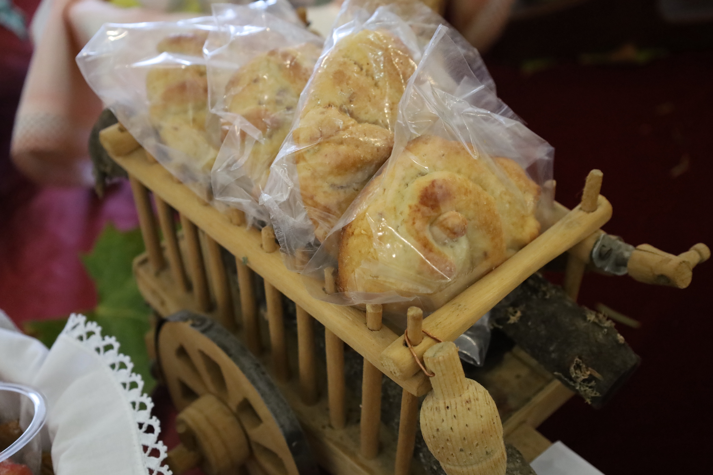
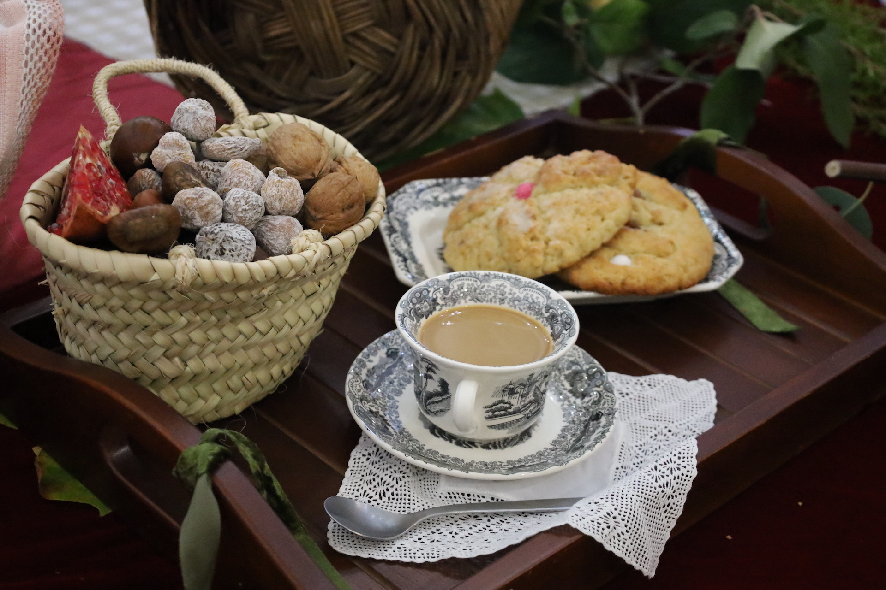
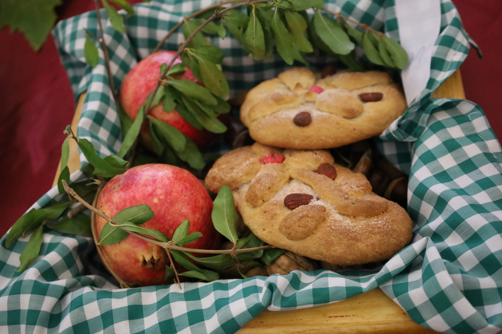
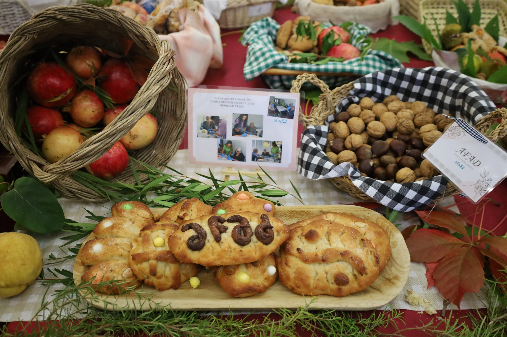

La Chaquetía
El festín de frutos secos y dulces en el día de Todos los Santos.
La Chaquetía en Herrera del Duque es una de las tradiciones más queridas del Día de Todos los Santos (1 de noviembre), profundamente arraigada en la comarca de La Siberia extremeña. Ese día, familias y grupos de amigos salen al campo para disfrutar de una jornada de convivencia al aire libre, en la que la naturaleza y la gastronomía tradicional son las protagonistas.
La celebración gira en torno a una merienda típica en la que no faltan las castañas, los frutos secos, los membrillos y las granadas, productos propios del otoño. Todo ello se acompaña del dulce más característico de esta fiesta: la chaquetía, un elaborado dulce casero que forma parte esencial de la identidad cultural local.
Este dulce tradicional se prepara con ingredientes como harina, huevos, azúcar, anís, aguardiente y manteca de cerdo (aunque hoy en día también se usa mantequilla o aceite de oliva en algunas versiones), dando lugar a una masa que suele moldearse en formas decorativas, como flores o figuras alargadas. Su sabor es inconfundible: crujiente por fuera, tierno por dentro, con un marcado toque anisado y un ligero aroma a licor que recuerda a los dulces de convento. No es excesivamente dulce, lo que permite apreciar la manteca y el anís, dejando un regusto cálido y casero, perfecto para acompañar con un trago de aguardiente o un buen chocolate caliente. Finalmente, se adorna con almendras o bolitas de anís, convirtiéndose en un elemento tan festivo como simbólico.
Además de la merienda en el campo, la Chaquetía incluye en algunos años concursos de elaboración de dulces, donde se premia la creatividad y el sabor de las recetas tradicionales. Más allá de lo gastronómico, esta celebración representa un momento de unión comunitaria, en el que se mantiene viva una costumbre transmitida de generación en generación.
Galería de fotos



